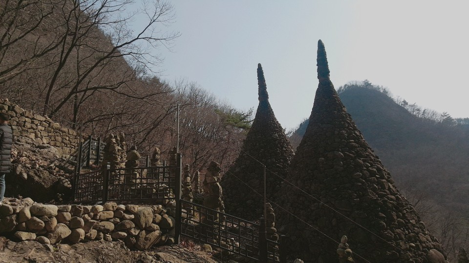
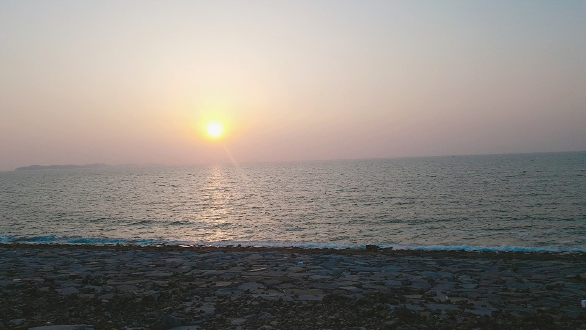

자연동굴을 법당으로 삼고 시작한 사찰 전라북도 진안군 마령면 동촌리 마이산(馬耳山)에 있는 절로 금당사(金堂寺)라고도 한다. 대한 불교조계종 제17교구 본사인 금산사(金山寺)의 말사이다. 절의 창건에 대해서는 두 가지 설이 있다.
나한전에 봉안된 6척의 목불좌상(木佛坐像)은 동구나무로 만든 것으로 전라북도유형문화재 제18호로 지정되어 있고, 너비 5m, 길이 9m의 괘불(掛佛)은 보물 제1266호로 지정되어 있다. 그 밖에도 대웅전 앞에는 고려 말 조선 초의 작품으로 추정되는 석탑 1기가 있는데 전라북도문화재자료 제122호로 지정되어 있다. 이 절에서 멀지 않은 곳에는 마이탑사(馬耳塔寺)와 단군을 받드는 이산묘(이山廟)가 있다.
높이 13m의 원뿔형태로 하나의 몸체로 올라가다가 두개의 탑을 이루는 특이한 형태로써 천지탑 역시 마치 한쌍의 부부처럼 탑사 한가운데 자리잡아 마이산 산세와 잘어울린다.
천지탑은 음과 양을 뜻하며, 보는 쪽에서 오른쪽이 하늘을 뜻하며, 보는 쪽에서 왼쪽이 땅을 뜻하는 음양의 천지탑이다. 천지탑은 만 3년이 세월 동안 쌓아졌으며, 낮에는 돌을 나르고 쌓아 올랐고 밤 자시(12시)에 는 윗돌 음돌 양돌을 올렸다 한다. 천지탑을 완료한 시기는 1926년에 완공한 것이다.
구한말시대에 일본이 조선을 식민지화하고 나라를 빼앗기는 아픔을 하늘에 알리고자하는 맘, 나라의 독립을 기원하는 소대로서 한 민족의 아픔을 하늘에 알리는데 큰 의미를 두고 있기 때문이다. 탑속에는 조그만한 돌들을 백성을 뜻하고, 탑 기단의 큰돌들은 독립군을 뜻하는 것이다.
출처: http://maisan.jinan.go.kr/
새만금사업은 전라북도 군산~부안간 총길이 33.9Km의 방조제를 축조해 총면적 40,900ha의 내부용지와 호소를 조성하여 동북아 경제협력의 중심 거점으로 개발하는 사업이다.
새만금 방조제는 길이 33.9km이고, 평균 바닥 폭 290m(최대 535m), 평균 높이 36m(최대 54m)이다. 방조제 건설로 인하여 전라북도 군산시·김제시·부안군 공유수면의 401㎢(토지 283㎢, 담수호 118㎢)가 육지로 바뀌었는데 이는 서울시 면적의 3분의 2(여의도 면적의 140배)에 이르는 면적이다. 간척지 조성으로 인하여 한국 국토 면적은 10만 140㎢에서 10만 541㎢로 0.4% 늘었다.
출처:https://map.naver.com/local/siteview.nhn?code=17513085
전라북도 군산시 가도안1길 45 (지번 전라북도 군산시 오식도동 917)
베니키아 아리울 호텔은 군산역 및 군산시외버스터미널에서 차로 약 30분 거리에 있다. 주변관광 명소로는 차로 30분 거리에 근대역사박물관, 철길마을, 영화 8월의크리스마스 촬영지인 초원사진관이 있으며, 일제강점기에 지어져 지금까지 그 모습을 간직하고 있는 히로쓰가옥도 자리하고 있다.
출처:https://map.naver.com/local/siteview.nhn?code=19593900&_ts=1552989688411
전화번호: 063-454-7870 주소:전북 군산시 해망로 240(지번)장미동 1-67 평일 09:00 - 21:001월 1일, 첫재,셋째 월요일 휴관
-(구)근산세관 본관/호남관세박물관: 대한제국(1908년/순종 2년 6월)에 만들어졌으며 당시 전하는 말에 따르면 불란서 사람 혹은 독일 사람이 설계하고 벨기에에서 붉은 벽돌과 건축자재를 수입하여 건축했다는 설이 있다. 군산세관은 많은 부속건물이 있었으나 현재는 모두 헐리고 본관건물만이 남아 있으며, 국내에 현존하는 서양고전주의 3대 건축물 중의 하나로 현재는 호남관세전시관으로 활용되고 있다.
-(구)미즈상사: 일제강점기 무역회사로 사용되던 건물로, 일본인이 운영하였다. 식료품과 잡화를 수입, 판매하던 회사로 한때 은행건물로도 사용되었다. 해방 이후에는 검역소로 사용하였으며, 현재는 이전 및 보수, 복원하여 북카페로 활용하고 있다.
-장미갤러리: 일제강점기에는 용도나 기능을 확인할 수 없는 건축물이었으나, 1945년 광복 이후에는 위락시설로 사용되었다. 2013년 보수, 복원하여 현재는 예술전시공간으로 활용하고 있다.
-(구)일본제18은행군산지점/근대미술관: 18은행은 일본 나가사키(長崎)에 본사를 두고 있던 은행으로, 숫자18은 은행 설립인가 순서를 의미한다. 군산지점은 조선에서 7번째 지점으로 1907년에 설립되었다. 군산의 18은행은 주 업무가 무역에 따른 대부업이 주종을 이루었다. 광복후 대한통운 지점 건물로 사용되었으며 2008년 2월 28일 등록문화재 지정 이후 보수·복원을 통하여 군산 근대미술관으로 활용하고 있다.
-장미공연장: 1930년대 조선미곡창고 주식회사에서 쌀을 보관했던 곳으로, 일제강점기 쌀 수탈의 아픔을 간직하고 있는 건축물이다. 2012년에 다목적 공연장으로 보수되어 활용하고 있다.
-(구)조선은행군산지점/근대건축관: 이 건물은 한국에서 활동했던 대표적인 일본인 건축가 나카무라 요시헤이가 설계하여 1922년에 신축한 은행건물로 채만식의 소설 '탁류'에서 고태수가 다니던 은행으로 묘사되기도 하였다. 당시 일본상인들에게 특혜를 제공하면서 군산과 강경의 상권을 장악하는데 초석을 쌓아, 일제강점기 침탈적 자본주의를 상징하는 대표적인 은행이었다. 2008년 보수·복원 과정을 거쳐 군산 근대건축관으로 활용하고 있다.
-진포해양공원: 세계최초의 함포해전으로 기록되는 진포대첩의 역사적 현장으로 고려말 최무선 장군이 왜선 500여척을 패퇴시킨 전적지 내항에 대한민국의 육해공군의 퇴역 군·경 장비(13종 16대)를 전시하고 있다. 그 중 주 전시관으로 사용하고 있는 위봉함은 1945년 미국에서 건조되어 제2차 세계대전 때 연합군의 상륙작전에 참전한 군함이다. 우리나라는 이 배를 1959년 미국으로부터 인수하여 1965년 월남전의 백구부대 일원으로 전투에 투입하였다. 위봉함은 지난 48년간 전투임무와 해군사관생도 및 해군 장병의 훈련 및 실습활동 지원을 통해 국토방위의 임무를 수행하고 2006년 12월 31일에 명예롭게 퇴역하여 오늘에 이르고 있다.
-군산화교역사관/용문각: 군산화교역사관은 일제강점기에 지어진 건물로, 1969년부터 2005년까지 중화요리집 ‘용문각’으로 운영되었다. 2017년 보수·복원하여 현재의 산화교역사관으로 개관하였으며, ‘군산화교의 역사와 문화’, ‘추억의 중화요리집’을 보여주는 전시공간으로 활용되고 있다.
출처:http://museum.gunsan.go.kr/index.do
군산 새만금방조제 초입에 있는 비응항의 바닷가 방파제에 위치한 등대로는 퓨전일식회센터 겸 씨푸드페밀리레스토랑이다.
호텔식 레스토랑과 같은 분위기에서 카페처럼 잔잔하게 흐르는 음악과 함께 서해바다에서 바로 잡아 온 각종 활어와 해물들을 활어회코스 , 해물샤브, 해물누룽지탕, 대하소금구이, 전복죽 등 각종 요리로 즐길 수 있으며, 27m 대형 창문을 통해 보석같이 영롱한 낙조가 바다 가득 펼쳐지는 마치 유람선의 선셋디너를 연상시키는 아름다운 곳이다.
MBC 맛이보인다, KBS 생생정보통, 아리랑TV 등에 맛집으로 소개가 되기도 하였다.
전화번호: 063-446-9500 주소:전북 군산시 비응로 71 (지번)비응도동 80-2
출처: https://store.naver.com/restaurants/detail?id=13528538
대한민국에서 현존하는 가장 오래된 빵집이다.
전화번호: 063-445-2772 주소:전북 군산시 중앙로 177(지번)중앙로1가 12-2 이성당
출처: https://store.naver.com/restaurants/detail?id=12011606